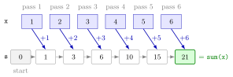

for Loop¶
Definition¶
A for loop runs the same block of code once for each element of a collection (a vector or a list):
In the first pass the loop variable item holds the first element of collection, in the second pass the second element, and so on until the last element. The number of passes is the length of the collection, fixed when the loop starts. for and in are reserved words; the loop variable can be any valid object name.
Interpretation¶
A for loop says "do this for each element". Only the loop variable changes from pass to pass; the code in the braces stays the same. To carry information from one pass to the next, create an accumulator before the loop, for example s <- 0, and update it inside.

The figure traces Example 1. The row of cells is the vector x <- 1:6; the arrow below each cell is one pass of the loop. Before the loop s is 0, after the first pass it is 1, after the second 3, and after the sixth pass it holds the full sum 21, the same value as sum(x).
The loop variable takes the values of the collection, not their positions. When you also need the position, for example to pair x[i] with y[i] or to write the result for element into slot of an output, loop over the indices 1:length(x). If each pass produces one output value, create the output vector with the right length before the loop (pre-allocation, z <- rep(0, length(x)) or numeric(length(x))) and fill it with z[i] <- ....
An accumulator loop is the code version of a sum : the loop variable plays the role of the index of summation. When the number of passes is not known in advance, a while loop fits better.
A frequent mistake is to grow the result inside the loop with z <- c(z, value). It works, but R has to copy the whole vector on every pass, which is slow for long loops and makes the code harder to follow than filling a pre-allocated z[i].
Key Results¶
- The body runs
length(collection)times, once per element, in order. - An accumulator must be created before the loop; created inside, it would be reset on every pass.
- Looping by index (
for (i in 1:length(x))) gives access to positions, neighbours such asx[i - 1], and aligned vectorsx[i],y[i]. - When each element gives one output, pre-allocate the output with its final length and assign by index.
- For an empty
x,1:length(x)is1:0, that is1 0, so the loop still runs twice;seq_along(x)is empty and the loop runs zero times. - After the loop the loop variable keeps its last value.
Examples¶
1. An accumulator. Summing a vector by hand, and checking with sum():
2. Looping by index with pre-allocation. The cumulative sums , one per element of x:
x <- 1:6
z <- rep(0, length(x))
for (i in 1:length(x)) {
z[i] <- sum(x[1:i])
}
z
#> [1] 1 3 6 10 15 21
Each pass writes into its own slot of z, so the results stay aligned with x. The built-in cumsum(x) gives the same numbers in one call.
3. Nested loops. Filling a matrix with the products :
M <- matrix(0, nrow = 2, ncol = 3)
for (i in 1:2) {
for (j in 1:3) {
M[i, j] <- i * j
}
}
M
#> [,1] [,2] [,3]
#> [1,] 1 2 3
#> [2,] 2 4 6
For each value of the outer variable i, the inner loop runs through all three values of j. The two loops need different names for their loop variables; with the same name, the inner loop would overwrite the outer one.
4. Pitfall: an empty vector. With no elements, 1:length(x) still produces two indices:
x <- numeric(0)
1:length(x)
#> [1] 1 0
for (i in 1:length(x)) {
print(x[i])
}
#> [1] NA
#> numeric(0)
for (i in seq_along(x)) {
print(x[i])
}
The first loop runs twice on elements that do not exist; the second runs zero times and prints nothing. Alternatively, check length(x) > 0 with an if statement before the loop.
Prerequisites¶
Related Concepts¶
- while Loop
- break, next and repeat
- Loops versus Vectorization
- if–else Statement
- Writing Functions
- Addition and Sum
- Algorithm
Sources¶
- Programming for EOR · Week 3
- Lecture 3, Part 1 Loops and Control Flow, sections "Repeated Operations using Loops", "1. for Loops" and "Looping by index"; Solutions Week 3, Part 1 Exercises 1–4
Aliases: for, for loop, for-loop, loop variable, accumulator, pre-allocation, nested loops Keywords: loop over a collection, loop variable, accumulator, looping by index, pre-allocation Symbols: sum
Last updated: 10 November 2026 16:43
for Loopbreak, next and repeatLoops versus VectorizationMonte Carlo Simulationwhile LoopWriting FunctionsAtomic VectorObject and AssignmentSubsetting by PositionSequences with : and seq()if–else StatementAddition and SumAlgorithm